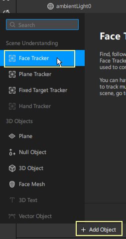

Adding a face tracker
> Open a blank Project
> Now, switch the camera view to the front camera if it’s not already on it, and in the Scene panel, click on Add Object and select Face Tracker.

Making objects respond to the movement of the face tracker
If you want any objects to react to the movement of the user’s face, make those objects children of the Face Tracker in the Scene Panel
Combining a Face Mesh with the Face Tracker
>In the Scene panel, click on Add Object and select Face Mesh.

Applying a material to the Face Mask
> In the Assets panel, click on Add Asset and select Material
>Let’s rename the material to maskMat and keep the default settings in the Inspector panel.
>Now, in the Scene panel, select the face mesh and set its material to
maskMat in the Inspector panel.
>Select the maskMat in the Assets panel and change the Shader type to Face Paint
To try it on your face